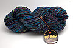
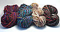
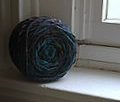

|
||
Premium Patterns Wintry Mix Mitts Love Bytes HawkeyeFree Patterns Kiddie Cadet Summerlin Ruffled Scarf Seamless DS Sock Simply Seamless Pouch Myriads of MushroomsExtras DIY Mitten Blocker Felt Patch Tutorial Yarn Dyeing Tutorial Needle Pouches Knitting Journal |
May 09, 2007 - Posted by Grace SchneblyCat Bed CrazyMy Little Knits order arrived on Monday. I stocked up on Noro Big Kureyon, which is on sale for $8.80 with free shipping if you order 10 hanks. The colors are really great in this yarn! This is my first experience with Big Kureyon, and although I have some Silk Garden and Kureyon in my stash I haven’t knit with it yet. My favorite colorway is #12, it really reminds me of those puddles you see in parking lots with the iridescent oil in them. Sorry kind of not the best visual but that’s what it reminds me of! I ordered two of each color (colors #1 , #7, #12, and #19), except I got four of the bright red one. Now I kind of wish I would have ordered four of a different color, but what can you do. These are all destined to be Kitty Pi’s. I know I am going cat bed crazy! I think that they would make good gifts, plus I have three babies of my own that need beds. I started on my first Kitty Pi last night using color #12. I am probably 75% done with this first cat bed, and will finish knitting it tonight and felt it tomorrow. The pattern so far has been straight forward and simple. Just lots and lots of knitting. It is Boggles birthday on Mother’s Day so this will be her gift. Hopefully they boys won’t steal it from her! She is the oldest of the group, and will be turning 5 years old! It doesn’t seems like I have had her for that long. I got her and Peanut the summer before I went to college and they moved to Seattle with me. Peanut is only 2 weeks younger than her, but about 10 pounds heavier… All of our cats were strays from Ellensburg, but now reside in Boston with us. Just as a side note, I wanted to say that I was kind of disappointed in Little Knits service. I placed my order on Friday, April 27, but didn’t hear anything from them for a full week. I just thought that they had shipped it and it should be arriving at my place any day. Then I got an email the next Friday on May 4, saying that they were just shipping out my order now! They said they were delayed because two of their employees quit. I just wish that they would have told me sooner that it was going to take so long to ship out. I emailed them back and requested for them to upgrade my shipping, and they did, so I am not holding any grudges. It was just a little annoying and surprising since Alice had dealt with them before and everything had worked out fine. At least my ordered arrived complete and intact… Unlike some other online yarn shops I have dealt with recently. I also wanted to mention that Crafty Alien has just added a new set of patterns to her cute line of little critters! It is called Buggin Out Volume 1, which includes instructions for a felted ant, lady bug, and bee. I ordered it from Etsy earlier today, and can’t wait for it to arrive in my inbox! |
   Recent ReviewsRecent Posts
 Our Favorites
|
| © 2007 KathrynIvy.com | ||
{kind=link}
{kind=link}
{kind=link}